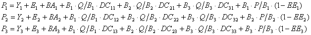
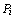
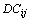
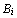
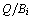
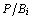
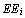

2.3 On the need for input parameters
Not all parameters used to construct a model need to be entered. The Ecopath model ‘links’ the production of each group with the consumption of all groups, and uses the linkages to estimate missing parameters, based on the mass-balance requirement of equation (1) that production from any of the groups has to end somewhere else in the system. This can be expressed, where there is not accumulation of biomass as
Production = Catch + biomass accumulation + predation mortality + net migration + other mortality
where the predation mortality term is the parameter that links the groups with each other. Ecopath balances the system using one production equation for each group in the system. For a system with three groups three production equations like the one above are used, i.e.,

Eq. 15
where,

is the total production of group i; Yi is the catches of group i, Ei is the net migration of i, and BAi the biomass accumulation. 
is the proportion of the diet predator group i obtains from prey group j. 
is the biomass of group i; 
is the consumption/biomass ratio of group i. 
is the production/biomass ratio of group i; 
is the ecotrophic efficiency, i.e. (1 - other mortality), of group i.
Yi, Ei, BAi, and  must always be entered, while entry is optional for any of the other four parameters (,,,). The above set of linear equations can be solved even if, for any of the groups, one or more of these four parameters is/are unknown (see below). It is not necessary that the same parameter is unknown for all groups, as the program can handle any combination of unknowns. The algorithms involved in the estimation of missing parameters are described in detail in Appendix 4 in the Help system. A number of algorithms have been incorporated, to estimate more than one missing parameter for each group, which takes advantage of the fact that most entries in the diet composition matrix will be zero. In some cases it may thus be possible to estimate the value of Q/B in addition to i, P/B, or EE of a group.
must always be entered, while entry is optional for any of the other four parameters (,,,). The above set of linear equations can be solved even if, for any of the groups, one or more of these four parameters is/are unknown (see below). It is not necessary that the same parameter is unknown for all groups, as the program can handle any combination of unknowns. The algorithms involved in the estimation of missing parameters are described in detail in Appendix 4 in the Help system. A number of algorithms have been incorporated, to estimate more than one missing parameter for each group, which takes advantage of the fact that most entries in the diet composition matrix will be zero. In some cases it may thus be possible to estimate the value of Q/B in addition to i, P/B, or EE of a group.
However, it is generally not possible to estimate the biomasses or P/B of apex predators from which there is no exports, or more specifically no fishery catches. Moreover, if too many input parameters are missing when estimating the basic parameters, a message to this effect will be displayed and the program will be aborted. In such cases, the data set will need to be complemented with additional inputs.